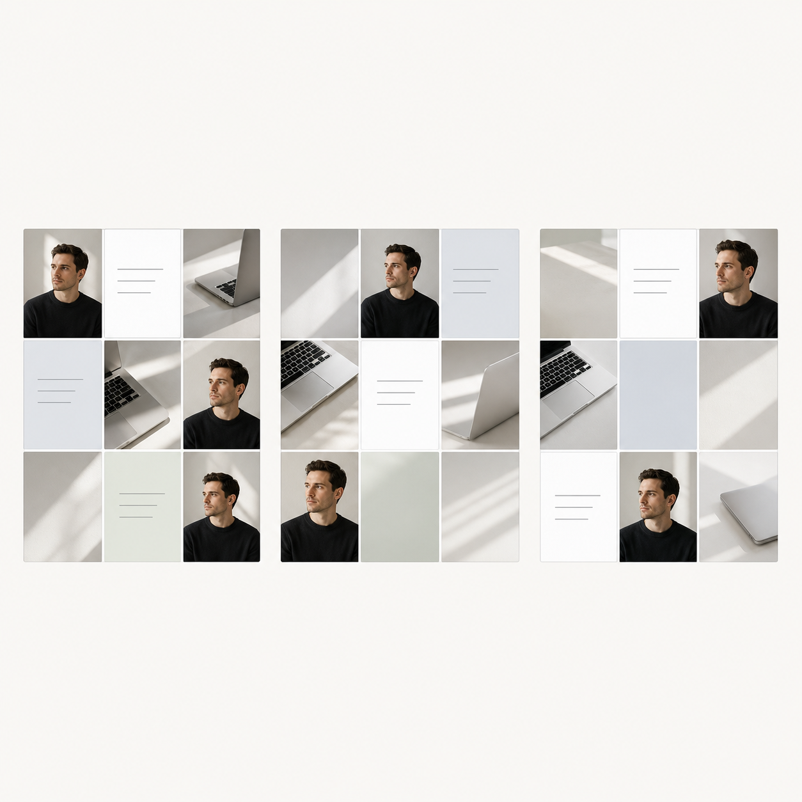

Управление личным брендом
Пульт контента, знаний и публикаций
Очередь выпусков
Состояние системы
Брендбук канонический файл подключен.
YouTube-календарь 50 выпусков аналитической философии.
Права фото отмечены как `needs_validation` до утверждения.
Быстрые входы
YouTube-календарь
Управление производством и архивом.
| # | Рубрика | Выпуск | База | Статус |
|---|
50 выпусков
Как думают топ-аналитики
Философская идея превращается в рабочую сцену, которую зритель уже пережил. В заголовке нет имени философа и нет термина; имя остается в описании видео.
- Узнаваемая сцена из бизнеса или аналитики.
- Скрытая философская идея без академического названия.
- Как топ-аналитик распознает ошибку мышления.
- Практический прием для решения.
- Философ и литература в описании видео.
Название рубрики
Основное
`Как думают топ-аналитики` продает навык мышления, а заголовок выпуска продает узнаваемую рабочую сцену.
Связь с реальным опытом
Философская идея должна быть спрятана в сцене, которую зритель уже проживал.
Почему не старое
Как мыслит бизнесмен, Бизнес как система, Философия бизнес-решений.
Философы
50 выпусков рубрики `Как думают топ-аналитики`.
Визуальный сигнал

Ассеты
Команды для управления из чата
Нажми, чтобы скопировать формулировку.